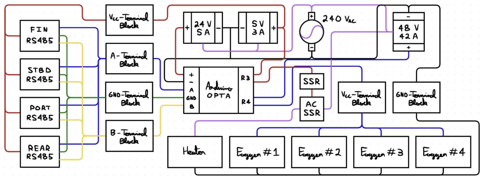

Hardware at Zipline
From building a 65°C 85% RH environmental chamber to designing motor controllers and bit error rate testers

Over my two internships at Zipline, I had the opportunity to get involved in various projects within different teams. Let's start with my first internship:
Mechatronics @ Powertrain
As a mechatronics engineering intern in the powertrain test team, I got to work on battery, motor and even system level test projects. These projects were:
Shipping Container → Environmental Chamber
My first project was to turn a regular shipping container into an inhouse environmental chamber that could hold 65°C 85% RH for at least a month.

Motor Rotor Tester
Designed a tester in NX that spins rotors past 30,000 RPM through a 1:5 belt drive reduction to validate magnet epoxy strength.
Component Vibration Testing
Designed a tester in NX that spins rotors past 30,000 RPM through a 1:5 belt drive reduction to validate magnet epoxy strength.